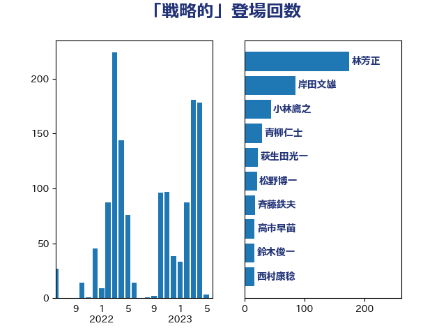

単語「戦略的」

| 林芳正 | 自由民主党 | 174 回 |
| 岸田文雄 | 自由民主党 | 85 回 |
| 小林鷹之 | 自由民主党 | 44 回 |
| 青柳仁士 | 日本維新の会 | 29 回 |
| 萩生田光一 | 自由民主党 | 23 回 |
| 松野博一 | 自由民主党 | 21 回 |
| 斉藤鉄夫 | 公明党 | 18 回 |
| 高市早苗 | 自由民主党 | 17 回 |
| 鈴木俊一 | 自由民主党 | 17 回 |
| 西村康稔 | 自由民主党 | 17 回 |
| 小西洋之 | 立憲民主党 | 16 回 |
| 永岡桂子 | 自由民主党 | 14 回 |
| 浜田靖一 | 自由民主党 | 13 回 |
| 柴田巧 | 日本維新の会 | 12 回 |
| 末松信介 | 自由民主党 | 12 回 |
| 阿部司 | 日本維新の会 | 11 回 |
| 河野義博 | 公明党 | 11 回 |
| 鈴木敦 | 国民民主党 | 9 回 |
| 鈴木憲和 | 自由民主党 | 9 回 |
| 篠原豪 | 立憲民主党 | 9 回 |
| 櫻井周 | 立憲民主党 | 8 回 |
| 山口壯 | 自由民主党 | 8 回 |
| 小野泰輔 | 日本維新の会 | 8 回 |
| 齋藤健 | 自由民主党 | 7 回 |
| 秋本真利 | 自由民主党 | 7 回 |
| 石井苗子 | 日本維新の会 | 7 回 |
| 武井俊輔 | 自由民主党 | 7 回 |
| 有村治子 | 自由民主党 | 7 回 |
| 小田原潔 | 自由民主党 | 7 回 |
| 和田有一朗 | 日本維新の会 | 7 回 |
| 吉良州司 | 無所属 | 7 回 |
| 中川正春 | 立憲民主党 | 7 回 |
| 渡辺周 | 立憲民主党 | 6 回 |
| 浜口誠 | 国民民主党 | 6 回 |
| 松本剛明 | 自由民主党 | 6 回 |
| 高木啓 | 自由民主党 | 5 回 |
| 青山大人 | 立憲民主党 | 5 回 |
| 鈴木貴子 | 自由民主党 | 5 回 |
| 金子恭之 | 自由民主党 | 5 回 |
| 足立康史 | 日本維新の会 | 5 回 |
| 葉梨康弘 | 自由民主党 | 5 回 |
| 石川博崇 | 公明党 | 5 回 |
| 津島淳 | 自由民主党 | 5 回 |
| 小渕優子 | 自由民主党 | 5 回 |
| 和田義明 | 自由民主党 | 5 回 |
| 伊藤俊輔 | 立憲民主党 | 5 回 |
| 伊佐進一 | 公明党 | 5 回 |
| 高橋光男 | 公明党 | 4 回 |
| 馬場雄基 | 立憲民主党 | 4 回 |
| 階猛 | 立憲民主党 | 4 回 |
| 金子道仁 | 日本維新の会 | 4 回 |
| 野田佳彦 | 立憲民主党 | 4 回 |
| 野村哲郎 | 自由民主党 | 4 回 |
| 辻清人 | 自由民主党 | 4 回 |
| 輿水恵一 | 公明党 | 4 回 |
| 谷公一 | 自由民主党 | 4 回 |
| 若宮健嗣 | 自由民主党 | 4 回 |
| 羽田次郎 | 立憲民主党 | 4 回 |
| 甘利明 | 自由民主党 | 4 回 |
| 玄葉光一郎 | 立憲民主党 | 4 回 |
| 源馬謙太郎 | 立憲民主党 | 4 回 |
| 掘井健智 | 日本維新の会 | 4 回 |
| 工藤彰三 | 自由民主党 | 4 回 |
| 宮崎雅夫 | 自由民主党 | 4 回 |
| 太栄志 | 立憲民主党 | 4 回 |
| 吉川ゆうみ | 自由民主党 | 4 回 |
| 北神圭朗 | 無所属 | 4 回 |
| 加田裕之 | 自由民主党 | 4 回 |
| 音喜多駿 | 日本維新の会 | 3 回 |
| 紙智子 | 日本共産党 | 3 回 |
| 福島伸享 | 無所属 | 3 回 |
| 磯崎仁彦 | 自由民主党 | 3 回 |
| 田村智子 | 日本共産党 | 3 回 |
| 田嶋要 | 立憲民主党 | 3 回 |
| 田島麻衣子 | 立憲民主党 | 3 回 |
| 猪瀬直樹 | 日本維新の会 | 3 回 |
| 枝野幸男 | 立憲民主党 | 3 回 |
| 松原仁 | 立憲民主党 | 3 回 |
| 後藤茂之 | 自由民主党 | 3 回 |
| 平木大作 | 公明党 | 3 回 |
| 岡本三成 | 公明党 | 3 回 |
| 山田賢司 | 自由民主党 | 3 回 |
| 山口晋 | 自由民主党 | 3 回 |
| 小沢雅仁 | 立憲民主党 | 3 回 |
| 小寺裕雄 | 自由民主党 | 3 回 |
| 國重徹 | 公明党 | 3 回 |
| 吉田宣弘 | 公明党 | 3 回 |
| 佐藤正久 | 自由民主党 | 3 回 |
| ながえ孝子 | 無所属 | 3 回 |
| 高野光二郎 | 自由民主党 | 2 回 |
| 高良鉄美 | 無所属 | 2 回 |
| 高橋英明 | 日本維新の会 | 2 回 |
| 高橋はるみ | 自由民主党 | 2 回 |
| 馬場伸幸 | 日本維新の会 | 2 回 |
| 青木愛 | 立憲民主党 | 2 回 |
| 門山宏哲 | 自由民主党 | 2 回 |
| 鈴木英敬 | 自由民主党 | 2 回 |
| 豊田俊郎 | 自由民主党 | 2 回 |
| 谷合正明 | 公明党 | 2 回 |
| 西銘恒三郎 | 自由民主党 | 2 回 |
| 落合貴之 | 立憲民主党 | 2 回 |
| 若松謙維 | 公明党 | 2 回 |
| 緑川貴士 | 立憲民主党 | 2 回 |
| 簗和生 | 自由民主党 | 2 回 |
| 穀田恵二 | 日本共産党 | 2 回 |
| 秋葉賢也 | 自由民主党 | 2 回 |
| 福田昭夫 | 立憲民主党 | 2 回 |
| 矢倉克夫 | 公明党 | 2 回 |
| 田畑裕明 | 自由民主党 | 2 回 |
| 牧山ひろえ | 立憲民主党 | 2 回 |
| 牧原秀樹 | 自由民主党 | 2 回 |
| 片山さつき | 自由民主党 | 2 回 |
| 渡辺猛之 | 自由民主党 | 2 回 |
| 浜野喜史 | 国民民主党 | 2 回 |
| 泉健太 | 立憲民主党 | 2 回 |
| 池田佳隆 | 自由民主党 | 2 回 |
| 梅谷守 | 立憲民主党 | 2 回 |
| 柳本顕 | 自由民主党 | 2 回 |
| 柘植芳文 | 自由民主党 | 2 回 |
| 松川るい | 自由民主党 | 2 回 |
| 本田太郎 | 自由民主党 | 2 回 |
| 早坂敦 | 日本維新の会 | 2 回 |
| 山際大志郎 | 自由民主党 | 2 回 |
| 山谷えり子 | 自由民主党 | 2 回 |
| 山添拓 | 日本共産党 | 2 回 |
| 尾身朝子 | 自由民主党 | 2 回 |
| 小熊慎司 | 立憲民主党 | 2 回 |
| 小沼巧 | 立憲民主党 | 2 回 |
| 太田房江 | 自由民主党 | 2 回 |
| 大野敬太郎 | 自由民主党 | 2 回 |
| 堀井巌 | 自由民主党 | 2 回 |
| 土田慎 | 自由民主党 | 2 回 |
| 伊藤孝恵 | 国民民主党 | 2 回 |
| 伊波洋一 | 無所属 | 2 回 |
| 仁木博文 | 無所属 | 2 回 |
| 井出庸生 | 自由民主党 | 2 回 |
| 井上哲士 | 日本共産党 | 2 回 |
| 中西祐介 | 自由民主党 | 2 回 |
| 中村裕之 | 自由民主党 | 2 回 |
| 中島克仁 | 立憲民主党 | 2 回 |
| 中山展宏 | 自由民主党 | 2 回 |
| 上杉謙太郎 | 自由民主党 | 2 回 |
| 上川陽子 | 自由民主党 | 2 回 |
| 三浦信祐 | 公明党 | 2 回 |
| 三宅伸吾 | 自由民主党 | 2 回 |
| 鬼木誠 | 立憲民主党 | 1 回 |
| 高橋千鶴子 | 日本共産党 | 1 回 |
| 高木かおり | 日本維新の会 | 1 回 |
| 須藤元気 | 無所属 | 1 回 |
| 青島健太 | 日本維新の会 | 1 回 |
| 青山繁晴 | 自由民主党 | 1 回 |
| 阿部弘樹 | 日本維新の会 | 1 回 |
| 長谷川淳二 | 自由民主党 | 1 回 |
| 長島昭久 | 自由民主党 | 1 回 |
| 長坂康正 | 自由民主党 | 1 回 |
| 野上浩太郎 | 自由民主党 | 1 回 |
| 里見隆治 | 公明党 | 1 回 |
| 足立敏之 | 自由民主党 | 1 回 |
| 赤羽一嘉 | 公明党 | 1 回 |
| 赤木正幸 | 日本維新の会 | 1 回 |
| 西野太亮 | 自由民主党 | 1 回 |
| 西田実仁 | 公明党 | 1 回 |
| 西村明宏 | 自由民主党 | 1 回 |
| 西岡秀子 | 国民民主党 | 1 回 |
| 藤巻健太 | 日本維新の会 | 1 回 |
| 藤丸敏 | 自由民主党 | 1 回 |
| 茂木敏充 | 自由民主党 | 1 回 |
| 芳賀道也 | 国民民主党 | 1 回 |
| 舩後靖彦 | れいわ新選組 | 1 回 |
| 自見はなこ | 自由民主党 | 1 回 |
| 細野豪志 | 自由民主党 | 1 回 |
| 笠井亮 | 日本共産党 | 1 回 |
| 竹内真二 | 公明党 | 1 回 |
| 空本誠喜 | 日本維新の会 | 1 回 |
| 穂坂泰 | 自由民主党 | 1 回 |
| 稲津久 | 公明党 | 1 回 |
| 秋野公造 | 公明党 | 1 回 |
| 神谷宗幣 | 参政党 | 1 回 |
| 礒崎哲史 | 国民民主党 | 1 回 |
| 玉木雄一郎 | 国民民主党 | 1 回 |
| 猪口邦子 | 自由民主党 | 1 回 |
| 片山大介 | 日本維新の会 | 1 回 |
| 滝沢求 | 自由民主党 | 1 回 |
| 湯原俊二 | 立憲民主党 | 1 回 |
| 渡辺創 | 立憲民主党 | 1 回 |
| 浜地雅一 | 公明党 | 1 回 |
| 浅野哲 | 国民民主党 | 1 回 |
| 泉田裕彦 | 自由民主党 | 1 回 |
| 河野太郎 | 自由民主党 | 1 回 |
| 河西宏一 | 公明党 | 1 回 |
| 沢田良 | 日本維新の会 | 1 回 |
| 江島潔 | 自由民主党 | 1 回 |
| 永井学 | 自由民主党 | 1 回 |
| 武見敬三 | 自由民主党 | 1 回 |
| 櫛渕万里 | れいわ新選組 | 1 回 |
| 森本真治 | 立憲民主党 | 1 回 |
| 梶原大介 | 自由民主党 | 1 回 |
| 梅村聡 | 日本維新の会 | 1 回 |
| 梅村みずほ | 日本維新の会 | 1 回 |
| 根本幸典 | 自由民主党 | 1 回 |
| 松山政司 | 自由民主党 | 1 回 |
| 東国幹 | 自由民主党 | 1 回 |
| 杉尾秀哉 | 立憲民主党 | 1 回 |
| 本庄知史 | 立憲民主党 | 1 回 |
| 木村次郎 | 自由民主党 | 1 回 |
| 斎藤アレックス | 国民民主党 | 1 回 |
| 平山佐知子 | 無所属 | 1 回 |
| 島尻安伊子 | 自由民主党 | 1 回 |
| 岩谷良平 | 日本維新の会 | 1 回 |
| 岩田和親 | 自由民主党 | 1 回 |
| 岡田直樹 | 自由民主党 | 1 回 |
| 岡本あき子 | 立憲民主党 | 1 回 |
| 山田俊男 | 自由民主党 | 1 回 |
| 山崎誠 | 立憲民主党 | 1 回 |
| 小林一大 | 自由民主党 | 1 回 |
| 寺田稔 | 自由民主党 | 1 回 |
| 宮本岳志 | 日本共産党 | 1 回 |
| 宮崎勝 | 公明党 | 1 回 |
| 宮口治子 | 立憲民主党 | 1 回 |
| 守島正 | 日本維新の会 | 1 回 |
| 奥下剛光 | 日本維新の会 | 1 回 |
| 大野泰正 | 自由民主党 | 1 回 |
| 大島敦 | 立憲民主党 | 1 回 |
| 大塚耕平 | 国民民主党 | 1 回 |
| 大塚拓 | 自由民主党 | 1 回 |
| 塩川鉄也 | 日本共産党 | 1 回 |
| 塩崎彰久 | 自由民主党 | 1 回 |
| 堀場幸子 | 日本維新の会 | 1 回 |
| 古賀之士 | 立憲民主党 | 1 回 |
| 古川禎久 | 自由民主党 | 1 回 |
| 勝目康 | 自由民主党 | 1 回 |
| 勝俣孝明 | 自由民主党 | 1 回 |
| 加藤明良 | 自由民主党 | 1 回 |
| 井上英孝 | 日本維新の会 | 1 回 |
| 中野洋昌 | 公明党 | 1 回 |
| 中谷真一 | 自由民主党 | 1 回 |
| 中田宏 | 自由民主党 | 1 回 |
| 中川郁子 | 自由民主党 | 1 回 |
| 中川康洋 | 公明党 | 1 回 |
| 世耕弘成 | 自由民主党 | 1 回 |
| 下条みつ | 立憲民主党 | 1 回 |
| 上田清司 | 国民民主党 | 1 回 |
| 上月良祐 | 自由民主党 | 1 回 |
| 一谷勇一郎 | 日本維新の会 | 1 回 |